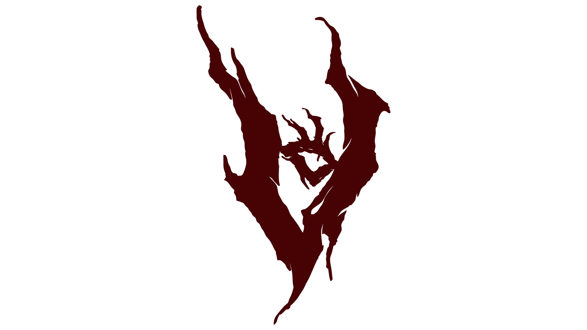

[ CLICK TO ENTER ]
ECO
O
V
E
R
T

N
E
R
AFINAR
METRO
ACORDES
OIDO
GUITARRA
BAJO
UKELELE
OBJETIVO:
CROMATICO
--
0.0 Hz
OFFLINE
INICIAR MICROFONO
90 BPM
Sonido: Click
Sonido: Bateria
Negras (4/4)
Negras (3/4)
Negras (2/4)
Corcheas (4/4)
Semicorcheas (4/4)
Tresillos (4/4)
Compas 6/8
TAP
-- PRESETS --
Metallica - Nothing Else Matters
AC/DC - Back In Black
Oasis - Wonderwall
Johnny Cash - Hurt
INICIAR
C
C#
D
D#
E
F
F#
G
G#
A
A#
B
Mayor
Menor
7
Maj7
m7
TOCAR ACORDE
TOCA LA NOTA:
--
INICIA EL MICROFONO
INICIAR ENTRENAMIENTO
REPETIR NOTA